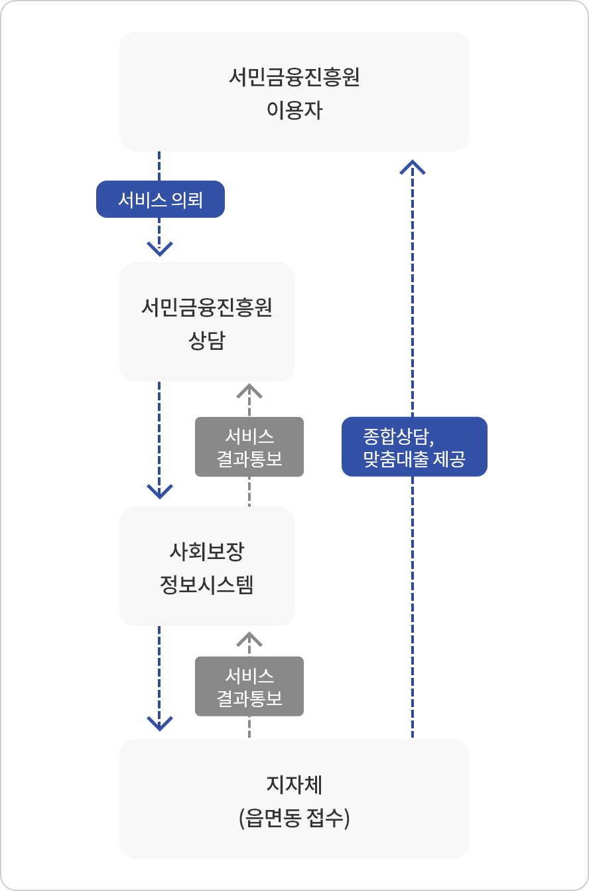
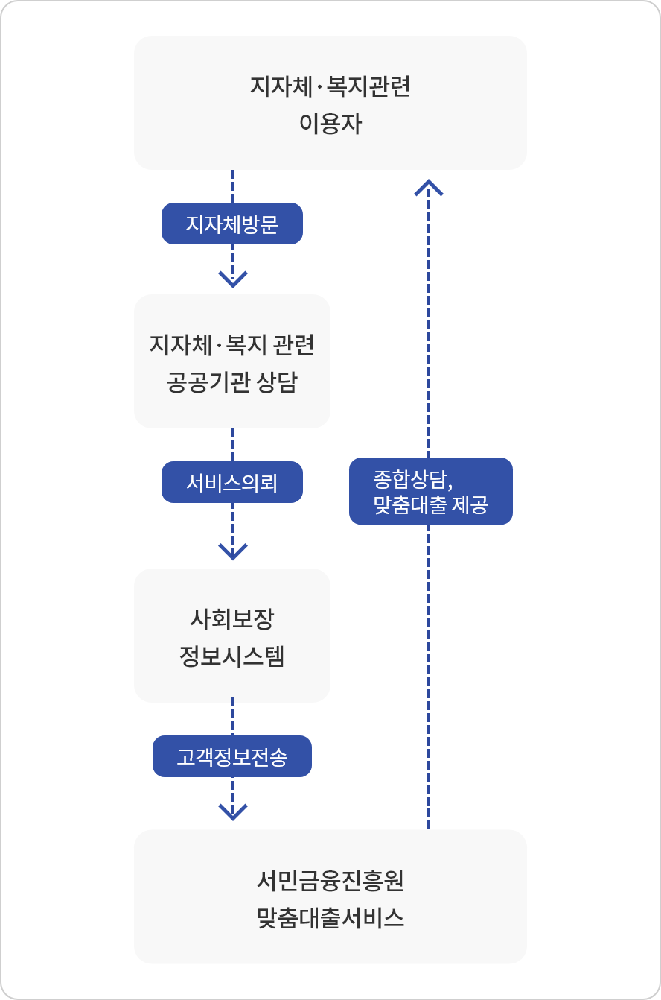

금융복지 양방향 서비스
고객서비스
금융소비자보호
통합지원센터
금융·복지 양방향서비스
서민금융진흥원은 전국 3,500개 읍면동 주민센터와 전산연계(사회보장정보시스템)를 통해 서금원 이용자 중 복지서비스가 필요한 경우, 주민센터로 신청해 드립니다.
서금원 이용자들이 주민 센터를 직접 방문해 복지서비스를 따로 신청하는 불편함 없이, 금융 복지 맞춤형 종합상담 서비스를 제공 합니다.
지방자치단체, 복지관련 공공기관 내방객이 금융서비스가 필요한 경우, 전산연계(사회보장정보시스템)를 통해 서금원의 금융서비스를 받으실 수 있습니다.
주민센터 방문으로 서민금융 종합 상담 및 맞춤대출서비스 연계 이용이 가능해져 서민금융을 다양한 경로로 신속하게 지원 받으실 수 있습니다.
금융·복지 양방향서비스 흐름도


2021년도 소득구간별 복지지원 서비스
서민금융통합지원센터
복지상담 가능한 통합지원센터 찾기